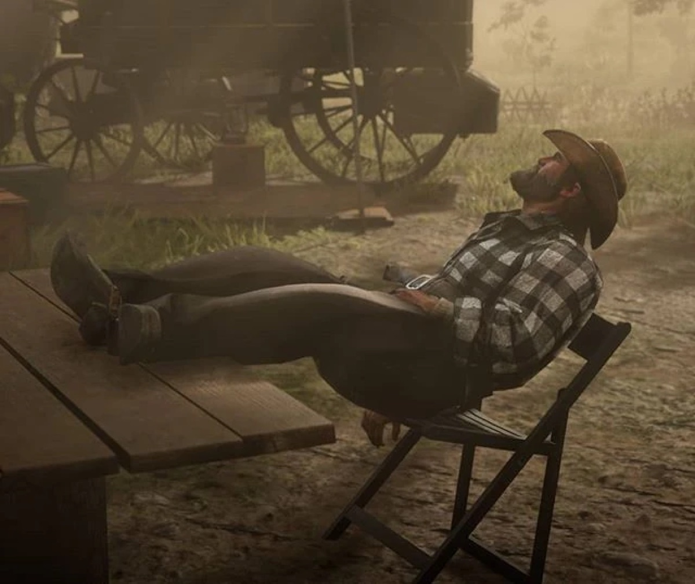
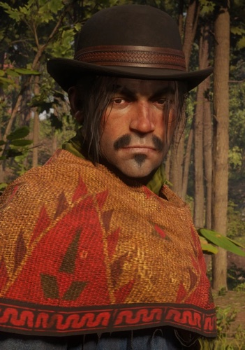
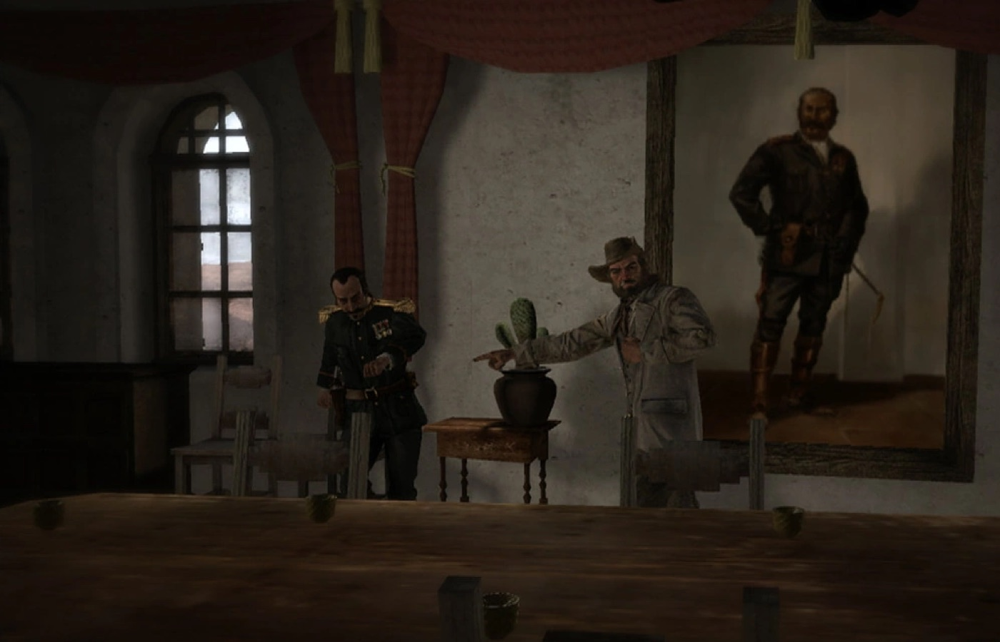

Personnage · Gang Van der Linde Bill Williamson Mort en 1911 Décédé Homme de main Voix de Steve J. Palmer Par Joseph Lambert · Mis à jour le 23 juin 2026 Bill Williamson est un homme de main de longue date du gang Van der Linde et l'un des antagonistes centraux du premier Red Dead Redemption (2010). Né Marion Williamson, ancien soldat de l'armée américaine déshonoré, Bill est brutal, complexé et farouchement loyal envers Dutch van der Linde, l'homme qui lui a offert une place où exister. Dans Red Dead Redemption 2, c'est un membre clé du gang en 1899 ; en 1911, il dirige sa propre bande de hors-la-loi et devient l'un des hommes qu'un John Marston sous contrainte est forcé de traquer. Il a été interprété par Steve J. Palmer dans les deux jeux. Nom completMarion Williamson Mort1911 StatutDécédé NationalitéAméricaine AffiliationGang Van der Linde ; gang de Williamson RôleHomme de main ; plus tard chef de gang JeuxRed Dead Redemption, Red Dead Redemption 2, Red Dead Online VoixSteve J. Palmer Biographie De l'armée au gang Né Marion Williamson, Bill a servi dans l'armée américaine avant d'en être renvoyé de manière déshonorante. Honteux de son renvoi comme de son prénom, il s'est fait appeler « Bill » et a basculé dans le crime, trouvant enfin un foyer au sein du gang Van der Linde. Pour un homme qui n'avait jamais vraiment appartenu nulle part, le gang est devenu la famille et le but qu'il réclamait. Un homme de main loyal (1899) Dans Red Dead Redemption 2, Bill fait partie des gros bras du gang : pas très fin, souvent soupe au lait, mais fiable dans la bagarre et dévoué à Dutch. C'est le genre d'homme qui obéit sans poser de questions, ce qui le rend utile à Dutch et, plus tard, facile à manipuler pour d'autres.  Bill Williamson, l'instrument brutal du gang. Son propre gang (1911) Après l'effondrement du gang Van der Linde, Bill refait surface des années plus tard à la tête de sa propre bande de hors-la-loi, retranchée à Fort Mercer, en New Austin. Lorsque des agents du gouvernement forcent John Marston à traquer ses anciens compagnons, Bill est la première grande cible, et la traque finit par le pousser de l'autre côté de la frontière, au Mexique. Personnalité Bill est bourru, soupe au lait et profondément complexé, un homme douloureusement conscient que les autres le prennent pour un imbécile. Ce complexe le pousse à réclamer respect et appartenance, ce que le gang de Dutch lui a justement donné, et explique la profondeur de sa loyauté. Il n'est pas cruel à la manière calculatrice de Micah ; les failles de Bill sont celles d'un suiveur qui a besoin de quelqu'un à suivre. Laissé à la tête de son propre gang, il se révèle dépassé. Relations Dutch van der Linde Le chef que Bill idolâtre et suit sans poser de questions. Dutch lui a donné l'appartenance qui lui avait toujours manqué, et la loyauté de Bill ne faiblit jamais. John Marston Un ancien frère de gang qui, des années plus tard, est forcé de le traquer, transformant de vieux compagnons en chasseur et proie. Arthur Morgan Un autre homme de main du gang de 1899. Les deux travaillent côte à côte, même si Arthur ne prend jamais Bill pour le plus malin de la bande. Micah Bell Un arrivant plus tardif dont Bill finit par prendre le parti à mesure que le gang se fracture, attiré par celui qui semble avoir la faveur de Dutch.  Javier Escuella Un autre membre du gang et une autre cible de John en 1911 ; les deux hommes fuient au Mexique tandis que le passé les rattrape. Mort et destin Chassé de New Austin, Bill fuit de l'autre côté de la frontière, dans le territoire mexicain de Nuevo Paraíso, où il s'allie au corrompu Colonel Allende. À mesure que la révolution se referme, sa chance finit par tourner. Lors de la mission « An Appointed Time », Bill est tué alors qu'il tente de s'enfuir aux côtés d'Allende, abattu tandis que John Marston et le chef rebelle Abraham Reyes prennent d'assaut le convoi. Après des années de fuite, l'homme de main loyal trouve sa fin loin du gang et de la seule famille qu'il ait connue.  Bill en fuite avec le Colonel Allende au Mexique, 1911. Coulisses Bill a été incarné par Steve J. Palmer dans Red Dead Redemption (2010) comme dans Red Dead Redemption 2, ce qui en fait l'un des rares acteurs, avec Benjamin Byron Davis et Rob Wiethoff, à reprendre un rôle majeur d'un jeu à l'autre. Comme les joueurs ont d'abord rencontré Bill en méchant de 1911, Red Dead Redemption 2 a eu l'occasion de l'humaniser, en montrant le suiveur loyal et complexé derrière le hors-la-loi que John traquerait un jour. Accueil et héritage En tant que l'une des cibles principales du premier jeu, Bill Williamson est un visage familier des joueurs de longue date. Red Dead Redemption 2 l'a considérablement approfondi, transformant un antagoniste sans détour en une figure plus triste et plus attachante. Il illustre la façon dont la série relie ses deux époques : un personnage dont l'histoire complète n'émerge que lorsqu'on prend les deux jeux ensemble. Anecdotes Son vrai prénom est Marion, qu'il cachait par honte, lui préférant « Bill ». Il a été renvoyé de l'armée américaine de manière déshonorante avant de rejoindre le gang. Il apparaît dans Red Dead Redemption, Red Dead Redemption 2 et Red Dead Online. C'est l'un des rares personnages à figurer en bonne place dans les deux jeux principaux. Galerie Bill Williamson dans Red Dead Redemption 2. En fuite au Mexique, 1911.